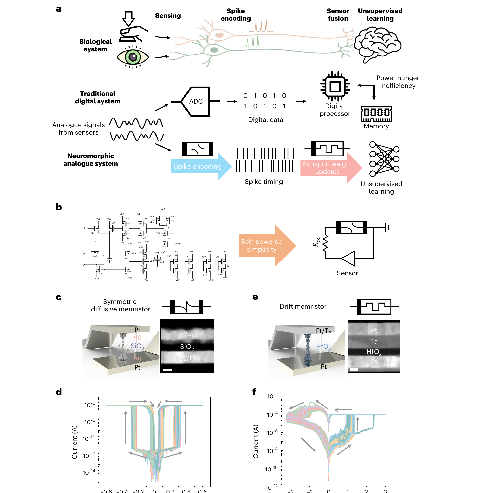
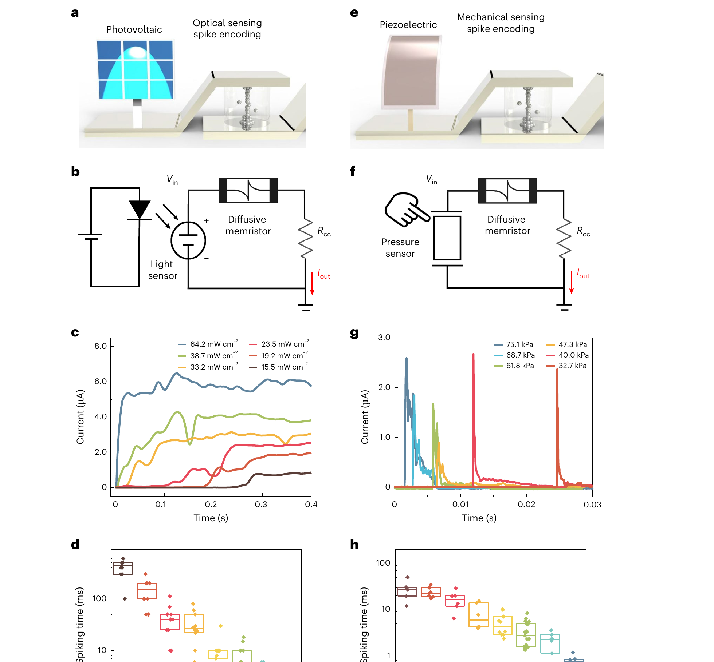
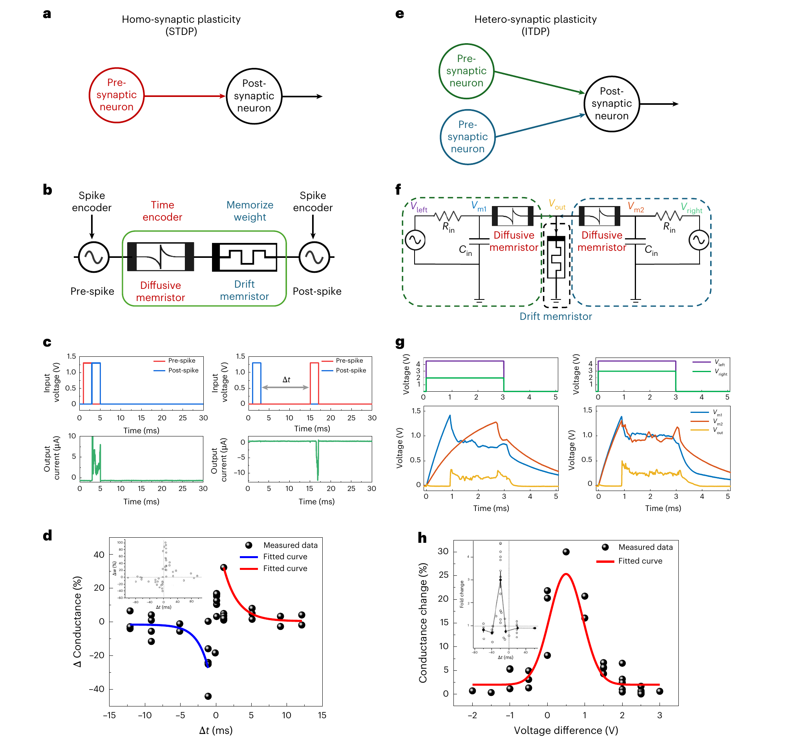
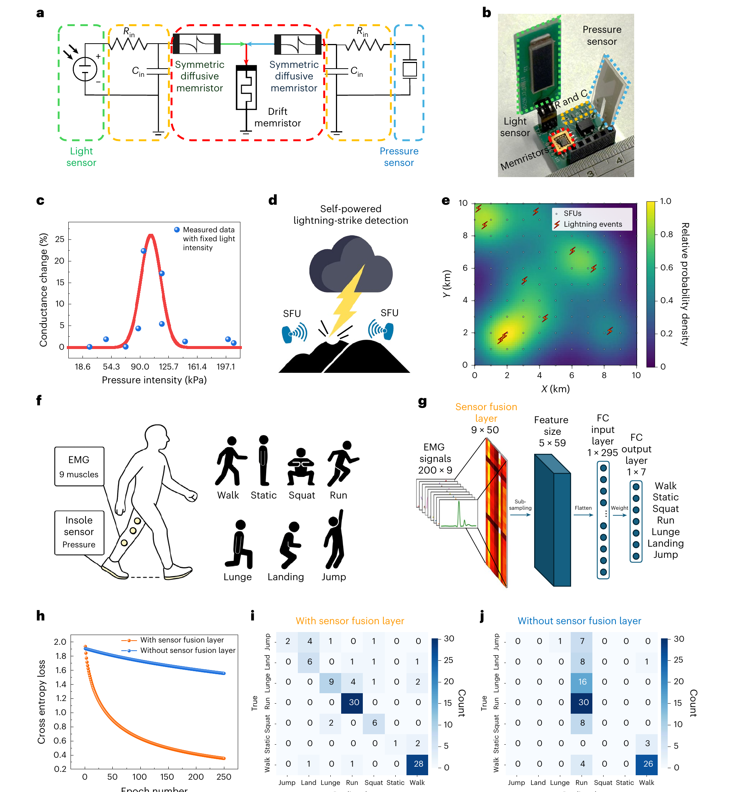

FIG. 1
系统主张：用忆阻器物理动态替代复杂 CMOS 编码与数字学习链路
第一图先建立论文的逻辑对比：生物系统天然处理模拟刺激和 spike timing；传统电子系统先数字化再处理；作者希望把模拟传感、脉冲编码和突触学习放回器件层。

这篇论文的核心不是再做一个数字神经网络，而是让器件物理本身承担计算：diffusive memristor 把光和压力这类自供能传感电压转换成 spike timing，drift memristor 把 spike 的时间相关性存成非易失电导权重。作者在 PCB 上完成光-压力融合硬件演示，并用雷电定位和人体动作识别模拟展示扩展潜力。
证据边界：下列图片由论文 PDF 高分辨率裁出，用于 Paper Lens 逐图研究解读；页面不附原始出版商 PDF。本文主实验是光伏传感器 + PVDF 压电传感器 + 忆阻器 PCB 的实验演示；雷电定位和人体活动识别部分主要是概念扩展与数据模拟，不是端到端大规模硬件部署。
传统多模态传感系统通常需要传感器输出、放大/整形、ADC、数字处理器和外部存储；这篇论文尝试把这些环节压缩成“自供能传感器 + diffusive memristor + drift memristor”的模拟硬件链路，让刺激强度先变成发放时间，再让多模态时间相关性变成可保存的权重。
第一图先建立论文的逻辑对比：生物系统天然处理模拟刺激和 spike timing；传统电子系统先数字化再处理；作者希望把模拟传感、脉冲编码和突触学习放回器件层。

这张图验证最底层的编码机制：自供能传感器产生电压，直接驱动 diffusive memristor；输入越强，离子迁移越快，达到阈值越早。

有了 spike timing 之后，系统还必须把“谁先谁后、是否同步”变成可保存的电导变化。Fig. 3 分别演示同突触 STDP 和异突触 ITDP。

最后一张图把前面的编码器和学习电路合成一个 sensor fusion unit：两个自供能传感器分别产生 spike timing，中间 drift memristor 存储两模态的相关性。

读这篇论文时最重要的分寸：它很好地证明了一个忆阻器物理计算原型，但还没有证明可直接替代完整数字边缘 AI 系统。它的价值在于把“传感即编码、相关即记忆”的硬件路径打通，而不是宣称所有多模态学习都能免去数字电路。
← 返回论文细读书架Full paper citation: Kim, S. J., Zhao, R., Sud, P., Xu, Y., Zhao, J., Liao, H.-T., Zhang, S., Midya, R., Qiu, Q. & Yang, J. J. Self-powered analogue neuromorphic system for multimodal sensing, encoding and learning with diffusive and drift memristors. Nature Sensors 1, 535-544 (2026). https://doi.org/10.1038/s44460-026-00067-7.